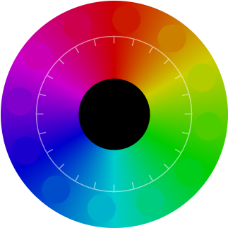

Настройка сайта для слабовидящих
1
Шаг 1.
Настройка цветовой схемы
Выбор цветовой гаммы
Образец страницы
Опции цветовой схемы
Светлая версия
Цветной фон
Черно-белая версия
Высокая контрастность
2
Шаг 2.
Выбор шрифта
Основной шрифт сайта
{{ font.family }}
Вес шрифта
{{ weight.caption }}
Образец текста
{{ loader.status }}
{{ loader.status }}
!
{{ loader.status }}
3
Шаг 3.
Размер основного текста
Коэффициент увеличения
Образец
4
Шаг 4.
Опции типографики
Межстрочный интервал
Межбуквенное расстояние
Образец
5
Шаг 5.
Графика и картинки
Видимость графики
Приглушить яркость изображений
Оставить только важные изображения
Образец страницы
Сбросить
Продолжить
Готово!

{{ min }}
{{ max }}
{{ ceil(val, accuracy) }}